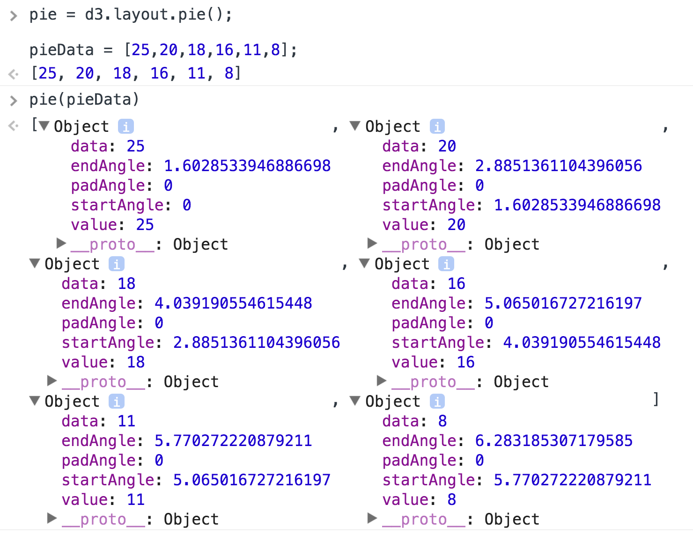
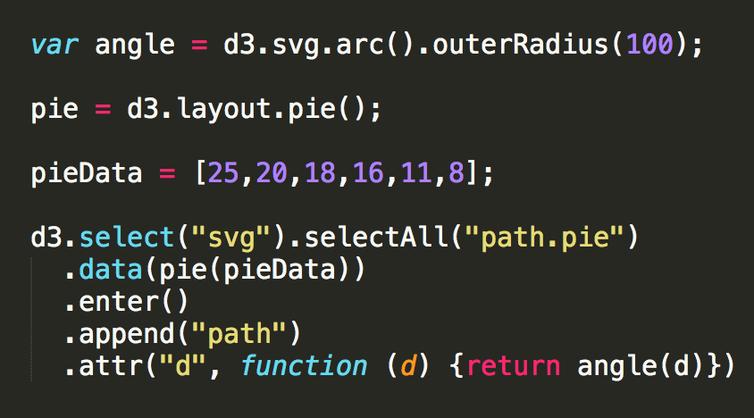
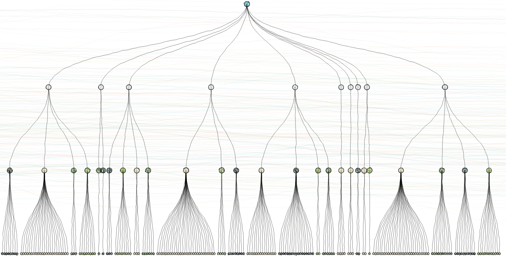
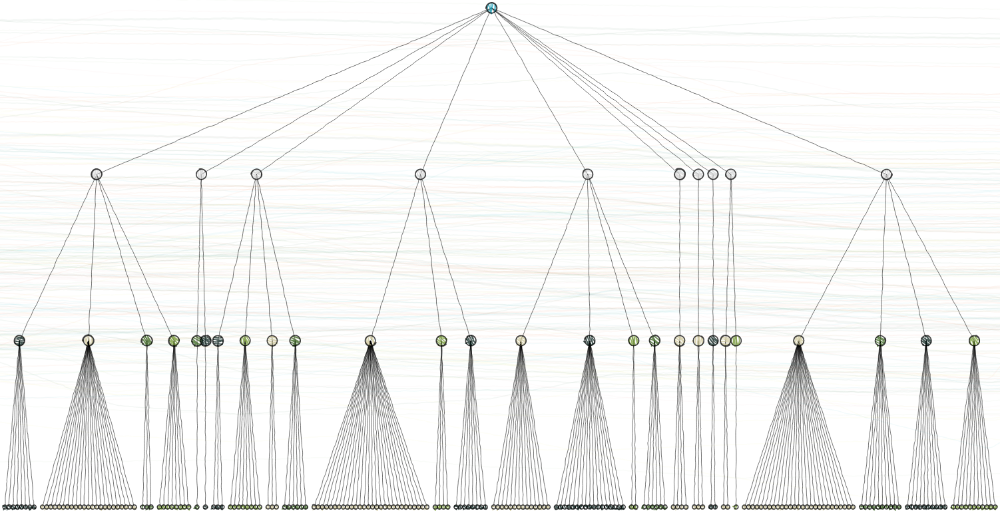
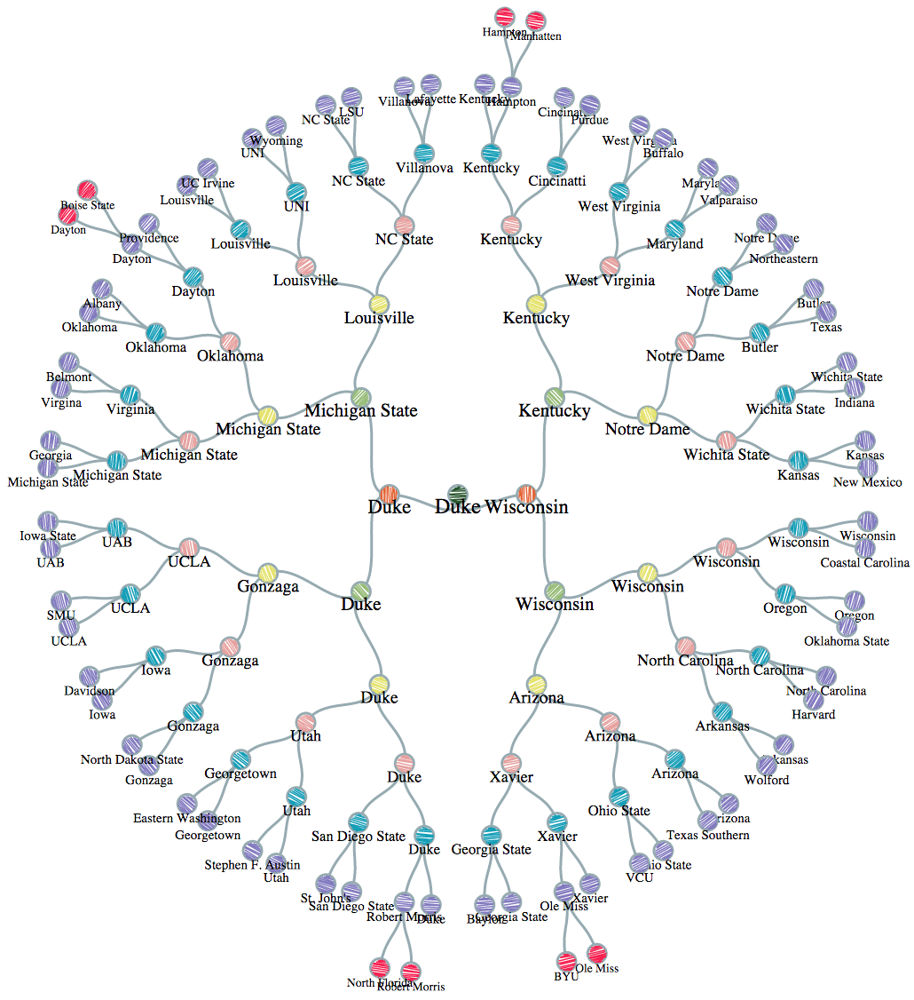

From the original site / 2015-09-01
This archived piece preserves its original text and historical context.
Using Complex D3 Layouts
What gets people into data visualization?
Well, nowadays probably money, but it used to be all those cool examples of data visualization that you might see in a demo or data-driven news article.
Unfortunately, most people who do get started creating data visualization find that they’re only building four kinds of charts: line charts, bar charts, scatterplots and pie charts.
There’s nothing wrong with these charts, per se, but there is something wrong with developers and audiences that think these are the only charts that are useful.
This post is adapted from the first half of this recent talk I gave.
D3 has been around long enough for there to be numerous tutorials and posts on its basic structure and layouts, so this post is going to focus specifically on D3 layouts and even more specifically on complex layouts.
Layouts are the functions in D3 that take an array of data and either create a new array of data or update the original array with the necessary attributes for you to draw it on screen. That may sound abstract. It’s more straightforward if we look at the much maligned pie chart, which is created in D3 with d3.layout.pie:

That's all a D3 layout produces. You'd be forgiven if you thought it would create an actual chart, but instead layouts create drawing instructions that you then need to use to actually draw shapes for your chart, in this case using the d3.svg.arc generator to make angles out of those pie slice instructions that d3.layout.pie creates.

A pie chart, though, doesn't qualify as a complex layout. By complex I mean that the layout visually encodes more than just the numerical data used in bar charts, lines charts and scatterplots. Complex layouts encode hierarchical relationship, network topology, geography, flow, and more generally the systems and structures that are lost in favor of the numerical precision found in those three simple charts.
When you decide you’re only going to use those simple charts, you cut out network data, geodata and hierarchical data, which is a massive amount of the data in the world. So, sure, you could transform the data so that it suits your charts. You can take complex network data and turn it into bar charts, if that’s all you know how to do.
Or, more importantly, if that’s all you feel like your audience can read.
A word of caution about the examples presented here: All of them are rendered using what is known as non-photorealistic rendering, which perturbs the lines and replaces solid fills with sketchy lines. You’ll be frustrated if you try too hard to read the actual data being visualized. This is on purpose. My intention is for you to focus on the layout itself, and not the data being represented.
As far as what data is being represented, for the hierarchical examples I’m showing the share of the labor force aged 15-24 in each country as calculated by the International Labour Organization (ILO). The countries have been nested into four buckets (low, medium, high, very high) and then into regions. Any good data visualization should have a legend, I would suggest using Susie Lu’s legend component, but these do not, so along with seeing sketchy lines, you also won’t know what the colors mean and what the regions are.

We’ll start with hierarchical data visualization. This is probably the most common form of complex data visualization created with D3. Hierarchical data visualization, like this dendrogram (dendro meaning “tree”, gram from “gramma” meaning “a thing written”) do more than represent the numerical value of the individual datapoints. In fact, hierarchical data visualization methods and most complex data visualization methods do a poor job of displaying numerical precision for comparison in the way that a scatterplot, line chart or bar chart do. But they sacrifice that numerical precision to explicitly describe the relationship between elements. Here we see a dataset composed of four generations of nested elements, with each generation showing differing mixes of children.
Notice that simple things like labels, memory and comparison become much harder with these layouts. Comparing this dendrogram with another, or throwing some labels on the various nodes, or zooming in on a portion of the layout are all going to be difficult tasks and likely to clutter the layout or confuse the reader.
Hierarchical data visualization in D3.js relies on a particular data structure:
{key: "parent", children: [
{key: "parent", children: [...]},
{key: "parent", children: [...]}
]
}
When looking at examples you’ll typically see the array named children or values, but the layouts allow you to specify the name.
This data is created from a tabular dataset using d3.nest along with d3.scale.quantile, which buckets numerical values into discrete categories. This production method is critical for effective creation of hierarchical datasets because when you’re leveraging layouts that do a poor job of representing numerical precision. If you intend to represent numerical data in any hierarchical layout, you should always categorize it and then you can use discrete color or size effectively.
Dendrograms don’t lend themselves to using size to encode attributes of nodes, so as a result you only have color, and that color is going to be hard to read in diagrams with moderate complexity that require smaller nodes. Because of this and because the dendrogram graphically represents links, it should be used when the focus is on the nesting structure itself.
Along with the d3.layout.tree, dendrograms also require the use of d3.svg.diagonal if you want those curving links. This is conventional, though, and if you want you can use SVG:line elements based on the source and target coordinates:

This seems like a minor point, but it's not. Successful use of D3 relies on your moving beyond what examples show, and even moving beyond what common practice is with a chart, to utilizing the raw layouts in new and different ways to represent data graphically.
Typically the space where you deploy a data visualization is wider than it is tall, so think about how many elements you’re placing in a row. Fundamentally, a dendrogram is a row-based display, and whether you want to display it horizontally or vertically depends on the maximum number of children. If it’s a small dendrogram, then horizontal placement is better, because it’s easier to read labels.
Sometimes a radial layout is good, but it requires the use of d3.svg.diagonal.radial and an understanding of how to project points radially for the node elements. Hover labels and hover-highlighting of predecessor/successor relationship is also useful. You can label all predecessors and successors, if possible, or provide summary information (such as the average value of all children). Collapsible nodes can be extremely useful, where you hide the children of a node and expand it on click or double-click. This is not done via a function in D3 but by filtering the dataset to remove the child nodes and then recalling the layout using the enter/exit/update pattern.
Dendrograms have one further use: When you’re confronted by someone who says that the only use for complex data visualization is to keep data visualization developers from getting bored, you can point out that 40 million people used a dendrogram just a few months back.

This NCAA 2015 dendrogram is a radial layout, which uses a square space more effectively but makes it harder to count and compare the changes in structure by generation (something unnecessary with the formulaic structure of the NCAA tournament).
There are other D3 layouts for representing hierarchical data, and other complex data visualization methods besides hierarchical data visualization, which I'll get into in a later post.
If you're interested in learning more about how to effectively create complex data visualization products like hierarchical data visualization using D3, I'm teaching a 2-day Bootcamp on November 7-8 for folks with some experience with D3 who want to improve their complex data visualization skills.